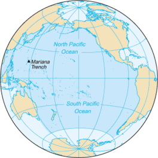

INDIAN OCEANS

The Indian Ocean occupies 70,560,000 square km area on the Earth’s surface. The Eurasian landmass lies to the north of the Indian Ocean, Australia to the east, Africa to the west and the Southern Ocean and Antarctica to the south. 3,741 m is the average depth of the Indian Ocean, and its deepest point is Diamantina Deep. The depth in this region is 8,047 m. The Indian Ocean region experiences a monsoon type of climate. Cyclones are common during the summer season. This ocean is also the warmest ocean in the world. The warm tropical waters of the ocean support a great diversity of life. The abundance of phytoplankton and aquatic flora supports a complex food chain. Thus, the Indian Ocean offers lucrative fishing grounds and fish, especially tuna and shrimp caught here, are sold to markets across the world. However, despite this great biodiversity, climate change is taking its toll on the Indian Ocean ecosystem. Overfishing in the waters is also disturbing the marine life in this part of the ocean.
ATLANTIC OCEANS

The Atlantic Ocean spans an area of 85,133,000 square km. The Atlantic Ocean is bounded by the landmasses of North and South America to the west and Asia and Africa to the east. The Arctic Ocean lies to its north, the Southern Ocean to its south, Pacific to the southwest and Indian Ocean to the southeast. The average depth of the Atlantic Ocean is 3,646 m and the Milwaukee Deep (8,380 m) in the Puerto Rico Trench, is its deepest known point. Since the Atlantic Ocean is vast, its climate varies widely from the north to the south. Warm and cold ocean currents in the Atlantic also influence the climate of the coastal areas on the shores of the Atlantic. The Gulf Stream and the North Atlantic Drift are responsible for keeping large parts of the coast of north-western Europe and the British Isles warm when the coast of Newfoundland in Canada on the same latitude experiences extreme temperatures in winter.
pacific oceans
The largest region of the Global Ocean, the Pacific Ocean has the Arctic Ocean to the north, the Southern Ocean to the south, Australia, and Asia to the west and the Americas to the east. Spanning an area of 168,723,000 square km, the Pacific Ocean accounts for one-third of the total surface area of the planet. The deepest point in the Pacific Ocean is the Challenger Deep in the Mariana Trench (10,929 m) located in the western North Pacific. Large parts of the Pacific remain unexplored due to its great depths. However, in the relatively shallow waters off the coast of Australia and New Zealand, petroleum and natural gas deposits have been discovered. Pearl extraction is also common in the Pacific's waters. A large variety of fish like tuna, salmon, swordfish, herring, snapper, etc., abound in parts of the Pacific.
southern oceans

Encircling Antarctica, south of the 60° S latitude, is the Southern Ocean or the Antarctic Ocean. It is the southernmost of the 5 regions of the Global Ocean and the fourth largest of the five. Though the Southern Ocean does not have a landmass bordering it to the north, it is treated as a separate oceanic division due to the difference in water properties of the ocean south of the 60° S latitude. It is a deep ocean with depth ranging between 4,000 and 5,000 m across most parts. Researchers estimate that the Southern Ocean seabed is a storehouse of massive oil and gas fields, valuable minerals like gold, placer deposits, manganese nodules, and more. The icebergs of the Southern Ocean are treated as freshwater resources, sufficient to feed every person on Earth for a period of several months. The Southern Ocean is also one of the most dangerous parts of the ocean for ships. Choppy seas, storms, and iceberg interventions are common. The remoteness also prevents rescue missions from reaching the ships in need.